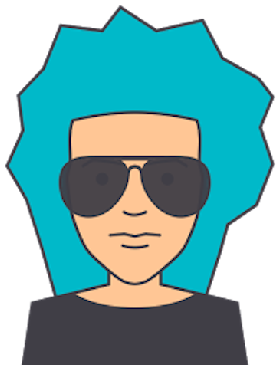

Geek Girls Carrots
A community that gets women and non-binary people into IT. I was on the team that ran it. Press: TVN24 Bis.

Player 1
I make developers care about products, and make products worth caring about. I write the docs, run the launches, take the stage and look after the community. Lately I do the same for AI: getting people to use the tools, and making sure the tools deserve it.
Press Start| Chromia: took the Twitter account from 20K to 120K followers without paying for a single ad. |
| Storacha: rebranded Web3.Storage and threw the Bangkok launch party, Pangina Heals included. |
| Concordium: created the Academy and its Rust tutorials. |
| Cudo Ventures (then Cudos): launched mainnet and grew the Discord by 60%. |
| Geek Girls Carrots: a community of 250,000 women and non-binary people in tech, and I was one of the people running it. |
English technical articles only. Grouped by theme.
Docs sites I worked on.
| Devcon Bangkok 2024 | speaker, panelist |
| Paris Blockchain Week 2024 | speaker, panelist, keynote |
| ETHGlobal Bangkok 2024 | judge (for Storacha) |
| Blocksplit | keynote, workshop |
| Aggregation Summit | workshop host, keynote speaker |
| Women in Web3 (XRP Ledger) | panelist |
| AfriDevCon 2019, Addis Ababa | panelist, workshop host, judge |
| Next Block Expo Warsaw | panelist |
| DAS London | panelist |
| UniTech Hackathon, Stockholm 2019 | speaker, judge |
| Hot Ones & Zeros, Bangkok (Storacha launch) | organizer |
| Storacha Halloween Hackathon 2024, with Taikai | organizer |
A community that gets women and non-binary people into IT. I was on the team that ran it. Press: TVN24 Bis.
When Russia invaded Ukraine in 2022, I teamed up with queer collectives in Poland, Sweden, Germany and the US to get people out, especially LGBTQ+ people and people of color. We helped over 2,000 people leave. Covered by TIME; fundraiser: zrzutka.pl/z5kzxj.
A spontaneous fundraiser: 1,000 PLN for every caregiver of a person with a disability who asked, to spend on anything silly, no spending rules. It raised 86,645 PLN and made the Polish press. Press: Hello Zdrowie, Wysokie Obcasy.
Hakierka is my Polish-language career-change blog, the alter ego I wrote under while moving from law into code. Coders Lab pieces include studiowanie bezrobocia (PL), praca programista (PL), jak znaleźć pracę za granicą (PL), and ile trwa nauka programowania (PL).